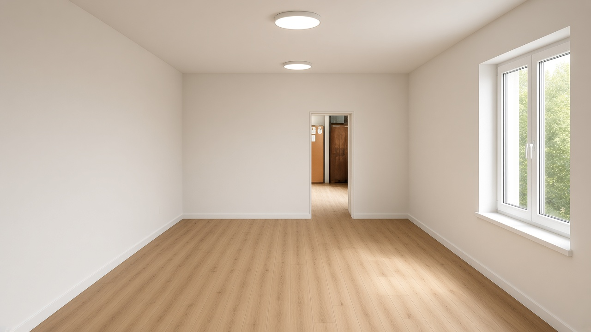
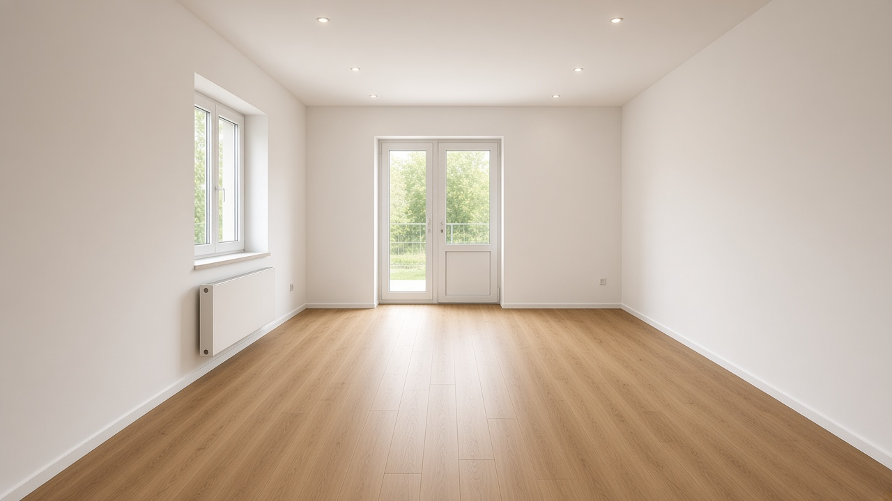
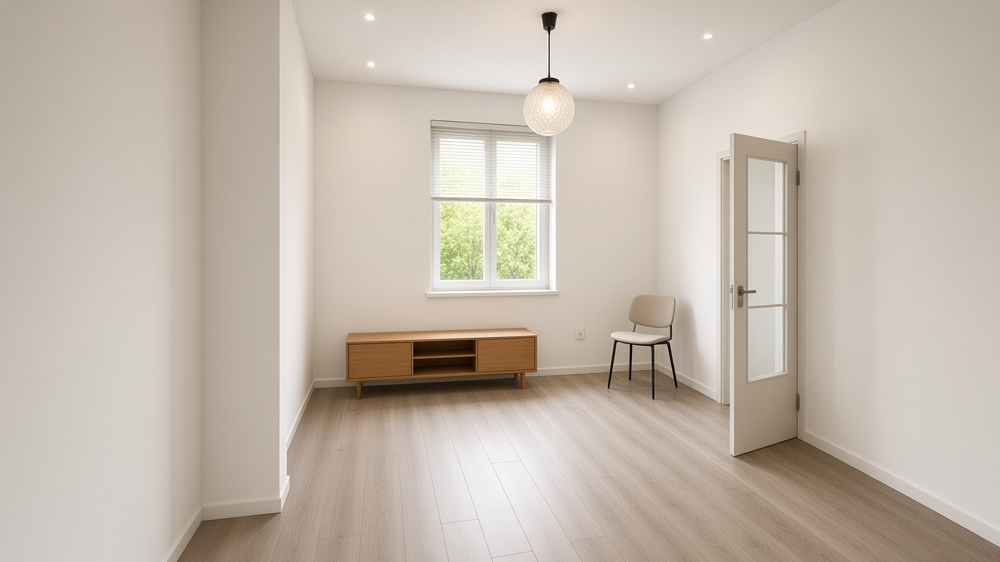
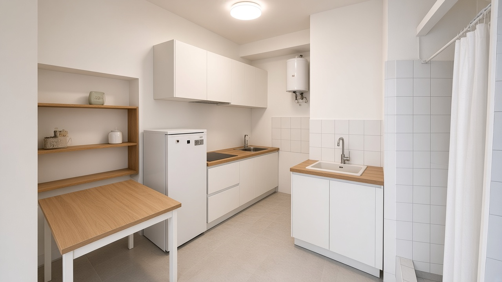
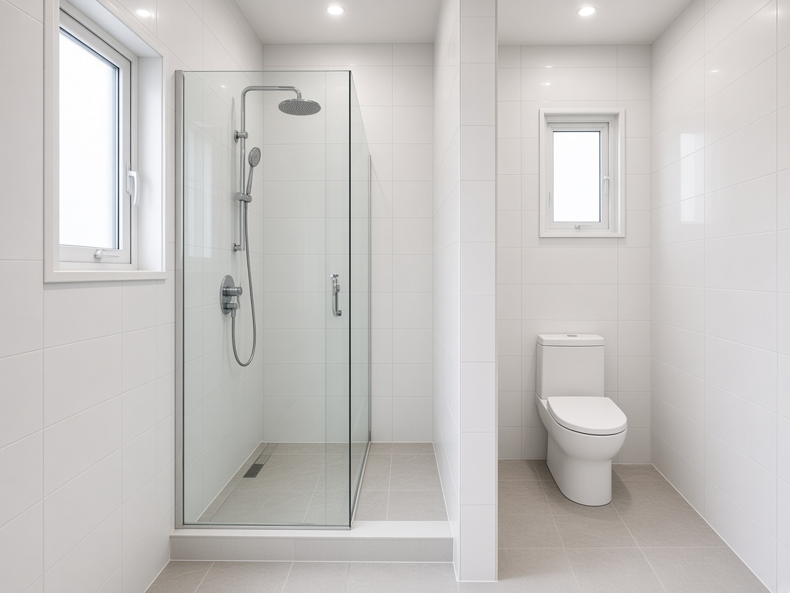

Nebytový priestor 48 m² · Bratislava · podľa pôdorysu a fotografií · 13. 11. 2026
Dôležité: Ide o orientačné AI vizualizácie strednej triedy (vinylová podlaha, biele steny, nové okná/dvere, nový mokrý trakt, kompaktná kuchynská linka).
Finálny vzhľad závisí od výberu materiálov po obhliadke. Kuchynská linka na vizualizácii je návrh — v položkovom rozpočte R3 linka nie je nacenená (iba umývadlo mid).

1. Izba pri vchode — po rekonštrukciiSvetlá vinylová podlaha, hladké steny, nové okná, čisté stropy so svetlami.

2. Pohľad na vchod / exteriér — po rekonštrukciiNové sklenené vchodové dvere, radiátor, rovnaká svetlá podlaha cez celú izbu.

3. Druhá izba — po rekonštrukciiBez starého nábytku, nová podlaha a dvere, čisté steny, moderné osvetlenie.

4. Kuchyňa — návrh po rekonštrukciiSanácia omietok, kompaktná linka (návrh), nové umývadlo, čisté elektro. Linka = vizuálny návrh.

5. WC + sprcha — po rekonštrukciiNová hydroizolácia, obklad, sprchový kút a hygienický mokrý trakt namiesto improvizácie.